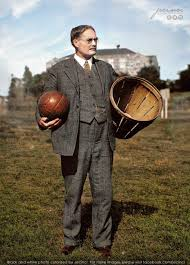

Orígenes del Baloncesto
El baloncesto fue inventado en 1891 por el canadiense James Naismith, un profesor de educación física en Springfield, Massachusetts, Estados Unidos.
Evolución del Juego
Desde sus humildes comienzos con cestas de melocotones hasta convertirse en un deporte global con millones de seguidores.
Expansión Internacional
El baloncesto se expandió rápidamente por todo el mundo y se convirtió en deporte olímpico en 1936.